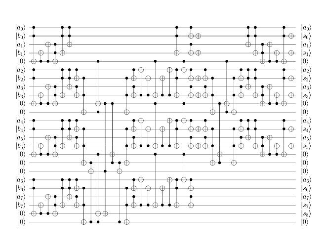

With the application of templates, the above circuit simplifies to the
one with 104 gates.
Particulars of the construction of adders such as this are discussed in the following paper: Y. Takahashi, N. Kunihiro; A Fast Quantum Circuit for Addition with Few Qubits; Quantum Information & Computation, Vol. 8 No. 6&7, pp. 636-649, 2008.